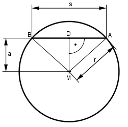

Pythagoras Aufgabe 52 Berechnen Sie s in cm, wenn r = 4 cm und a = 2 cm.

s DA = --- 2 Satz von Pythagoras im Dreieck MAD: s r2 = a2 + (---)2 | - a2 2 s (---)2 = r2 - a2 = 42 - 22 = 16 - 4 = 12 2 s2 ---- = 12 *4 4 s2 = 48 cm2 |√ s = 6,9 cm